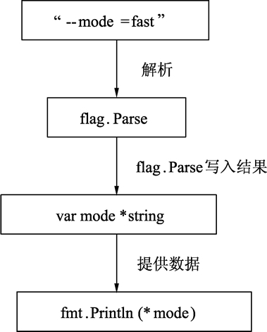

Go语言指针详解，看这一篇文章就够了
与 Java 和 .NET 等编程语言不同，Go语言为程序员提供了控制数据结构指针的能力，但是，并不能进行指针运算。Go语言允许你控制特定集合的数据结构、分配的数量以及内存访问模式，这对于构建运行良好的系统是非常重要的。指针对于性能的影响不言而喻，如果你想要做系统编程、操作系统或者网络应用，指针更是不可或缺的一部分。
指针（pointer）在Go语言中可以被拆分为两个核心概念：
受益于这样的约束和拆分，Go语言的指针类型变量即拥有指针高效访问的特点，又不会发生指针偏移，从而避免了非法修改关键性数据的问题。同时，垃圾回收也比较容易对不会发生偏移的指针进行检索和回收。
切片比原始指针具备更强大的特性，而且更为安全。切片在发生越界时，运行时会报出宕机，并打出堆栈，而原始指针只会崩溃。
其实，指针是 C/C++ 语言拥有极高性能的根本所在，在操作大块数据和做偏移时即方便又便捷。因此，操作系统依然使用C语言及指针的特性进行编写。
C/C++ 中指针饱受诟病的根本原因是指针的运算和内存释放，C/C++ 语言中的裸指针可以自由偏移，甚至可以在某些情况下偏移进入操作系统的核心区域，我们的计算机操作系统经常需要更新、修复漏洞的本质，就是为解决指针越界访问所导致的“缓冲区溢出”的问题。
要明白指针，需要知道几个概念：指针地址、指针类型和指针取值，下面将展开详细说明。
每个变量在运行时都拥有一个地址，这个地址代表变量在内存中的位置。Go语言中使用在变量名前面添加
指针实际用法，可以通过下面的例子了解：
提示：变量、指针和地址三者的关系是，每个变量都拥有地址，指针的值就是地址。
取地址操作符
变量、指针地址、指针变量、取地址、取值的相互关系和特性如下：
前面已经演示了使用多重赋值的方法进行数值交换，使用指针同样可以进行数值交换，代码如下：
如果在 swap() 函数中交换操作的是指针值，会发生什么情况？可以参考下面代码：
下面的代码通过提前定义一些命令行指令和对应的变量，并在运行时输入对应的参数，经过 flag 包的解析后即可获取命令行的数据。
【示例】获取命令行输入：
由于之前已经使用 flag.String 注册了一个名为 mode 的命令行参数，flag 底层知道怎么解析命令行，并且将值赋给 mode*string 指针，在 Parse 调用完毕后，无须从 flag 获取值，而是通过自己注册的这个 mode 指针获取到最终的值。代码运行流程如下图所示。
指针（pointer）在Go语言中可以被拆分为两个核心概念：
- 类型指针，允许对这个指针类型的数据进行修改，传递数据可以直接使用指针，而无须拷贝数据，类型指针不能进行偏移和运算。
- 切片，由指向起始元素的原始指针、元素数量和容量组成。
受益于这样的约束和拆分，Go语言的指针类型变量即拥有指针高效访问的特点，又不会发生指针偏移，从而避免了非法修改关键性数据的问题。同时，垃圾回收也比较容易对不会发生偏移的指针进行检索和回收。
切片比原始指针具备更强大的特性，而且更为安全。切片在发生越界时，运行时会报出宕机，并打出堆栈，而原始指针只会崩溃。
C/C++中的指针
说到 C/C++ 中的指针，会让许多人“谈虎色变”，尤其是对指针的偏移、运算和转换。其实，指针是 C/C++ 语言拥有极高性能的根本所在，在操作大块数据和做偏移时即方便又便捷。因此，操作系统依然使用C语言及指针的特性进行编写。
C/C++ 中指针饱受诟病的根本原因是指针的运算和内存释放，C/C++ 语言中的裸指针可以自由偏移，甚至可以在某些情况下偏移进入操作系统的核心区域，我们的计算机操作系统经常需要更新、修复漏洞的本质，就是为解决指针越界访问所导致的“缓冲区溢出”的问题。
要明白指针，需要知道几个概念：指针地址、指针类型和指针取值，下面将展开详细说明。
认识指针地址和指针类型
一个指针变量可以指向任何一个值的内存地址，它所指向的值的内存地址在 32 和 64 位机器上分别占用 4 或 8 个字节，占用字节的大小与所指向的值的大小无关。当一个指针被定义后没有分配到任何变量时，它的默认值为 nil。指针变量通常缩写为 ptr。每个变量在运行时都拥有一个地址，这个地址代表变量在内存中的位置。Go语言中使用在变量名前面添加
&操作符（前缀）来获取变量的内存地址（取地址操作），格式如下：
ptr := &v // v 的类型为 T
其中 v 代表被取地址的变量，变量 v 的地址使用变量 ptr 进行接收，ptr 的类型为*T，称做 T 的指针类型，*代表指针。指针实际用法，可以通过下面的例子了解：
package main
import (
"fmt"
)
func main() {
var cat int = 1
var str string = "banana"
fmt.Printf("%p %p", &cat, &str)
}
运行结果：
0xc042052088 0xc0420461b0
代码说明如下：- 第 8 行，声明整型变量 cat。
- 第 9 行，声明字符串变量 str。
-
第 10 行，使用 fmt.Printf 的动词
%p打印 cat 和 str 变量的内存地址，指针的值是带有0x十六进制前缀的一组数据。
提示：变量、指针和地址三者的关系是，每个变量都拥有地址，指针的值就是地址。
从指针获取指针指向的值
当使用&操作符对普通变量进行取地址操作并得到变量的指针后，可以对指针使用*操作符，也就是指针取值，代码如下。
package main
import (
"fmt"
)
func main() {
// 准备一个字符串类型
var house = "Malibu Point 10880, 90265"
// 对字符串取地址, ptr类型为*string
ptr := &house
// 打印ptr的类型
fmt.Printf("ptr type: %T\n", ptr)
// 打印ptr的指针地址
fmt.Printf("address: %p\n", ptr)
// 对指针进行取值操作
value := *ptr
// 取值后的类型
fmt.Printf("value type: %T\n", value)
// 指针取值后就是指向变量的值
fmt.Printf("value: %s\n", value)
}
运行结果：
ptr type: *string
address: 0xc0420401b0
value type: string
value: Malibu Point 10880, 90265
- 第 10 行，准备一个字符串并赋值。
- 第 13 行，对字符串取地址，将指针保存到变量 ptr 中。
- 第 16 行，打印变量 ptr 的类型，其类型为 *string。
- 第 19 行，打印 ptr 的指针地址，地址每次运行都会发生变化。
- 第 22 行，对 ptr 指针变量进行取值操作，变量 value 的类型为 string。
- 第 25 行，打印取值后 value 的类型。
- 第 28 行，打印 value 的值。
取地址操作符
&和取值操作符*是一对互补操作符，&取出地址，*根据地址取出地址指向的值。变量、指针地址、指针变量、取地址、取值的相互关系和特性如下：
-
对变量进行取地址操作使用
&操作符，可以获得这个变量的指针变量。 - 指针变量的值是指针地址。
-
对指针变量进行取值操作使用
*操作符，可以获得指针变量指向的原变量的值。
使用指针修改值
通过指针不仅可以取值，也可以修改值。前面已经演示了使用多重赋值的方法进行数值交换，使用指针同样可以进行数值交换，代码如下：
package main
import "fmt"
// 交换函数
func swap(a, b *int) {
// 取a指针的值, 赋给临时变量t
t := *a
// 取b指针的值, 赋给a指针指向的变量
*a = *b
// 将a指针的值赋给b指针指向的变量
*b = t
}
func main() {
// 准备两个变量, 赋值1和2
x, y := 1, 2
// 交换变量值
swap(&x, &y)
// 输出变量值
fmt.Println(x, y)
}
运行结果：
2 1
代码说明如下：- 第 6 行，定义一个交换函数，参数为 a、b，类型都为 *int 指针类型。
- 第 9 行，取指针 a 的值，并把值赋给变量 t，t 此时是 int 类型。
-
第 12 行，取 b 的指针值，赋给指针 a 指向的变量。注意，此时
*a的意思不是取 a 指针的值，而是“a 指向的变量”。 - 第 15 行，将 t 的值赋给指针 b 指向的变量。
- 第 21 行，准备 x、y 两个变量，分别赋值为 1 和 2，类型为 int。
- 第 24 行，取出 x 和 y 的地址作为参数传给 swap() 函数进行调用。
- 第 27 行，交换完毕时，输出 x 和 y 的值。
*操作符作为右值时，意义是取指针的值，作为左值时，也就是放在赋值操作符的左边时，表示 a 指针指向的变量。其实归纳起来，*操作符的根本意义就是操作指针指向的变量。当操作在右值时，就是取指向变量的值，当操作在左值时，就是将值设置给指向的变量。如果在 swap() 函数中交换操作的是指针值，会发生什么情况？可以参考下面代码：
package main
import "fmt"
func swap(a, b *int) {
b, a = a, b
}
func main() {
x, y := 1, 2
swap(&x, &y)
fmt.Println(x, y)
}
运行结果：
1 2
结果表明，交换是不成功的。上面代码中的 swap() 函数交换的是 a 和 b 的地址，在交换完毕后，a 和 b 的变量值确实被交换。但和 a、b 关联的两个变量并没有实际关联。这就像写有两座房子的卡片放在桌上一字摊开，交换两座房子的卡片后并不会对两座房子有任何影响。示例：使用指针变量获取命令行的输入信息
Go语言内置的 flag 包实现了对命令行参数的解析，flag 包使得开发命令行工具更为简单。下面的代码通过提前定义一些命令行指令和对应的变量，并在运行时输入对应的参数，经过 flag 包的解析后即可获取命令行的数据。
【示例】获取命令行输入：
package main
// 导入系统包
import (
"flag"
"fmt"
)
// 定义命令行参数
var mode = flag.String("mode", "", "process mode")
func main() {
// 解析命令行参数
flag.Parse()
// 输出命令行参数
fmt.Println(*mode)
}
将这段代码命名为 main.go，然后使用如下命令行运行：
go run main.go --mode=fast
命令行输出结果如下：fast
代码说明如下：-
第 10 行，通过 flag.String，定义一个 mode 变量，这个变量的类型是 *string。后面 3 个参数分别如下：
- 参数名称：在命令行输入参数时，使用这个名称。
- 参数值的默认值：与 flag 所使用的函数创建变量类型对应，String 对应字符串、Int 对应整型、Bool 对应布尔型等。
- 参数说明：使用 -help 时，会出现在说明中。
- 第 15 行，解析命令行参数，并将结果写入到变量 mode 中。
- 第 18 行，打印 mode 指针所指向的变量。
由于之前已经使用 flag.String 注册了一个名为 mode 的命令行参数，flag 底层知道怎么解析命令行，并且将值赋给 mode*string 指针，在 Parse 调用完毕后，无须从 flag 获取值，而是通过自己注册的这个 mode 指针获取到最终的值。代码运行流程如下图所示。

图：命令行参数与变量的关系
图：命令行参数与变量的关系
创建指针的另一种方法——new() 函数
Go语言还提供了另外一种方法来创建指针变量，格式如下：new(类型)
一般这样写：str := new(string) *str = "Go语言教程" fmt.Println(*str)new() 函数可以创建一个对应类型的指针，创建过程会分配内存，被创建的指针指向默认值。
关注公众号「站长严长生」，在手机上阅读所有教程，随时随地都能学习。内含一款搜索神器，免费下载全网书籍和视频。

微信扫码关注公众号